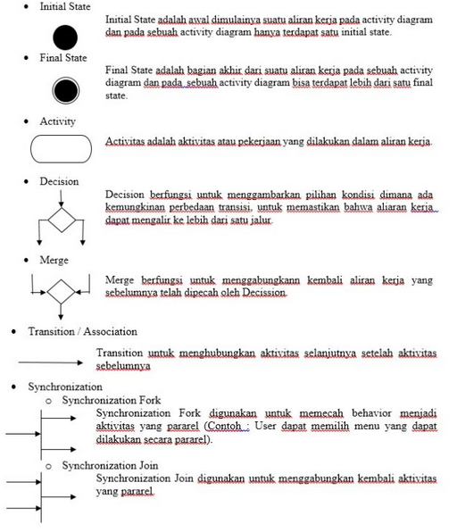

NIM 1811500009
Nama Thoriq Dariswansyah
Kelompok TI6A
Hasil saya merangkum di pertemuan 2 :
- Absensi dan penilaian nilai dihitung dari kita buat link dan file pertemuan yang kita rangkum.
- Nama file ditulis angka sesuai pertemuan ke berapa /index.html dibelakangnya.
- Dipertemuan ini kita harus menganalisa masalah kegiatan pemesanan atau penjualan, analisa dalam sistem berjalan,dan menerapkannya ke dalam Activity Diagram.
- Diketahui dalam jalan bisnis atau activity pemesanan bisa melalui online atau offline / secara langsung beli ke tokonya,untuk pertemuan kali ini kita membuat activity diagram pembeliannya secara offline atau ketemu langsung.
- Apa itu Activity Diagram sebenarnya? Activity Diagram sebagai penggambaran terhadap activity sistem yang lagi berjalan / proses bisnis yang lagi berjalan / yang sedang terjadi.
- Di dalam Activity Diagram Memiliki Komponen sebagai berikut

- Dalam petemuan ini kita menggunakan aplikasi astah comunity untuk membuat Activity Diagram
Hasil file project astah Download